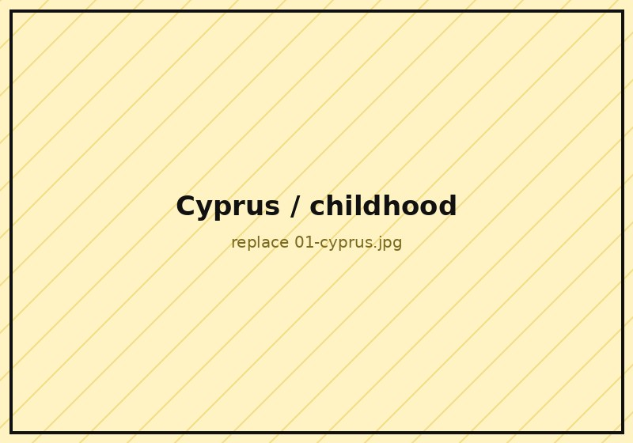
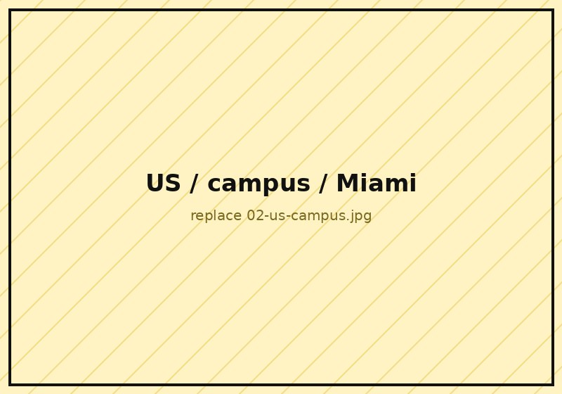
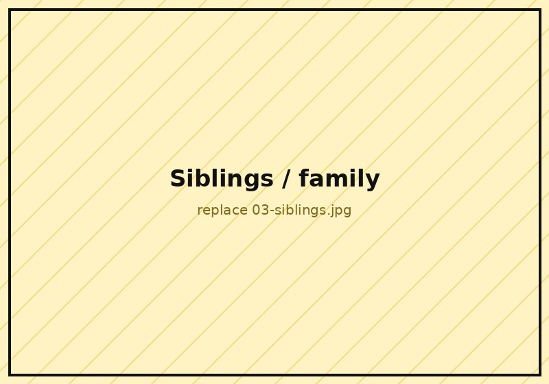
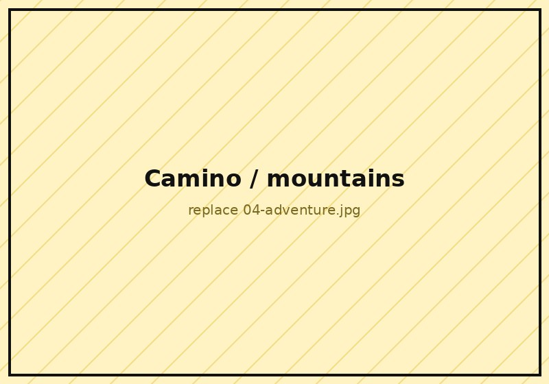
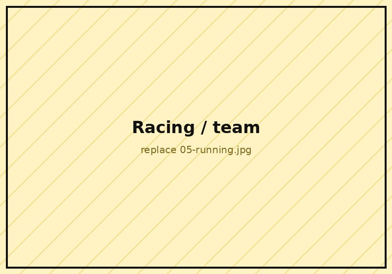
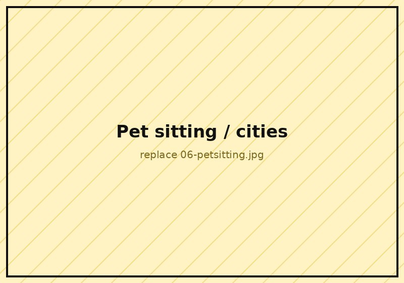

Who am 1?
I was made in Cyprus, an island where the sun works overtime and so do people's opinions. I grew up surrounded by family: the kind that shows up unannounced, feeds you twice, and has a strong view on everything from politics to how you cut a watermelon.
I was the kid who talked. A lot. To classmates, to teachers, to strangers at the beach. If you were interesting, you were stuck with me (PS: this is still true). Between school, sports, and cousins, I was always moving and always asking questions, mostly of the "but why does it work like that?" variety. Some things never change.

The road 2 the US
Who would have guessed that the girl from the island would end up in Miami? A full scholarship did it, athletic and academic, which is a polite way of saying I got paid to run and do math at the same time.
I landed in the US in the middle of COVID, knowing exactly zero people. You can call it a leap of faith. I studied Mathematics and Statistics, and later a Master's in Data Science. My undergrad was beautifully theoretical, which is another way of saying my code did not compile. Instead of pretending otherwise, I asked for help, and got lucky: I was mentored by Panayiotis Petousis, became part of RootSquare, and spent time in an NLP lab with Professor Mark Finlayson, teaching computers to read stories while I was still learning to write for loops.
Slightly crazy, very cool, no regrets.

Another 3 Siblings
I am the youngest of four, and I won the sibling lottery. Growing up in a full house meant constant company, shared everything, and someone always having your back. They are still my favorite people to be around.
My brother and I even opened a thrift store together, Thrifthood, selling second-hand streetwear in Nicosia. It is going fantastically.

Down 4 Any Adventure
Traveling?? Yess! Road trip?? Yesss. Hiking?? Yess.
I have climbed Mount Olympus, walked 380 kilometers of the Camino in Spain, and driven 3,000 kilometers around Greece in one road trip. Next mission: a Balkan road trip!

5 Years Running Competitively
Running competitively meant 4:50 a.m. alarms, six days a week. Six!! Would I change it? Not a chance :)
The team, the spirit, the shared early mornings (and the shared complaining about the early mornings). That is what made it. Plus, I got to travel to maybe over 10 states, including California, Texas, and New York, to name a few.
I still run a few times a week, and a half marathon might be next. Maybe!?

6 Flights Later
For a while, my address was "it depends on the month." New York, DC, Los Angeles, Boston, Italy, Miami. I was pet sitting and working remotely, living out of a backpack (literally, a backpack) and other people's living rooms, approved by their dogs first.
I got very good at building a life anywhere in about a week: find a running route, join a club, talk to strangers until they become friends. And through it all, I had the support of my two best friends, who made those months some of the best of my life. The people I now consider family.
🐾 Those flights are also how I became a pet sitter.Still doing it today, back home in Cyprus. Read the story →

7 Things I Live By
Health and people first, everything else adjusts. Take it day by day. Ask the question instead of pretending to know. Show up consistently, and the results eventually stop being a coincidence. Be grateful to the people who show up for you. It is okay to not be okay sometimes. And give when you can, it has a funny way of coming back.
Epilogue
Go run my name through Google's maze,
Scan my LinkedIn for seven days,
Count every mile, each flight, each state,
Review my CV, evaluate,
Inspect my code, investigate,
Judge every choice I made to date,
Zoom on my photos, speculate,
But you still know nothing 'bout me, mate.
Just reach out, it's never too late :)